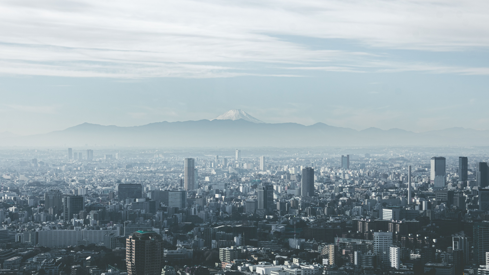
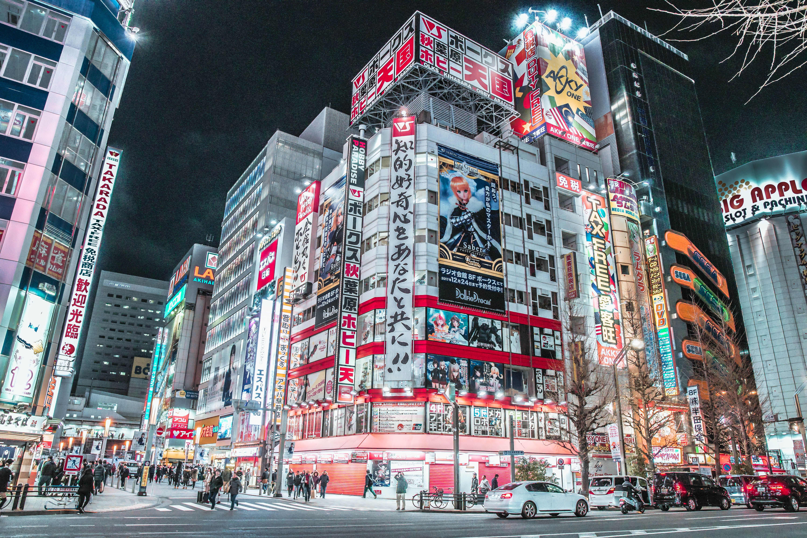
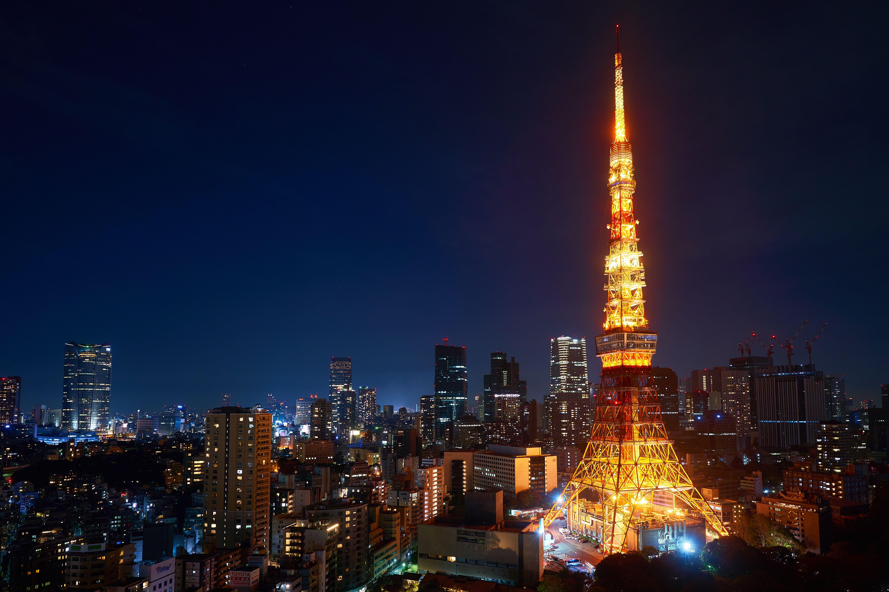
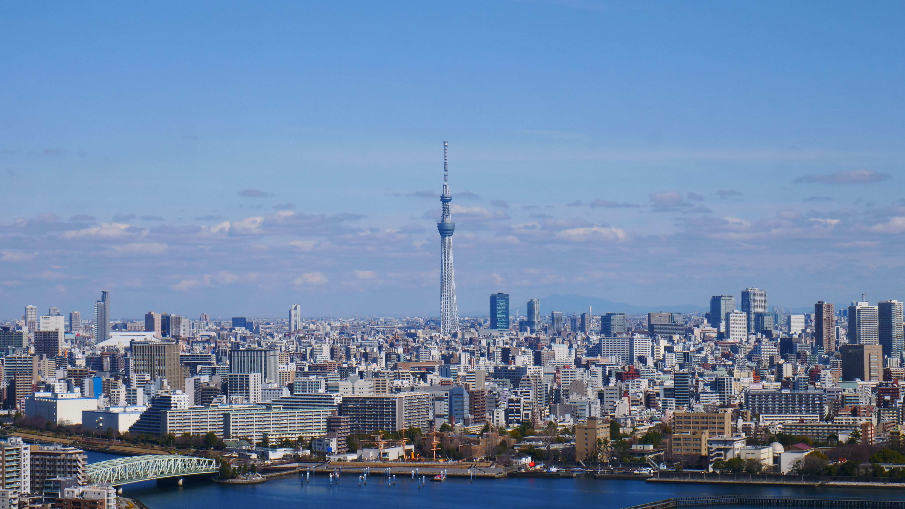
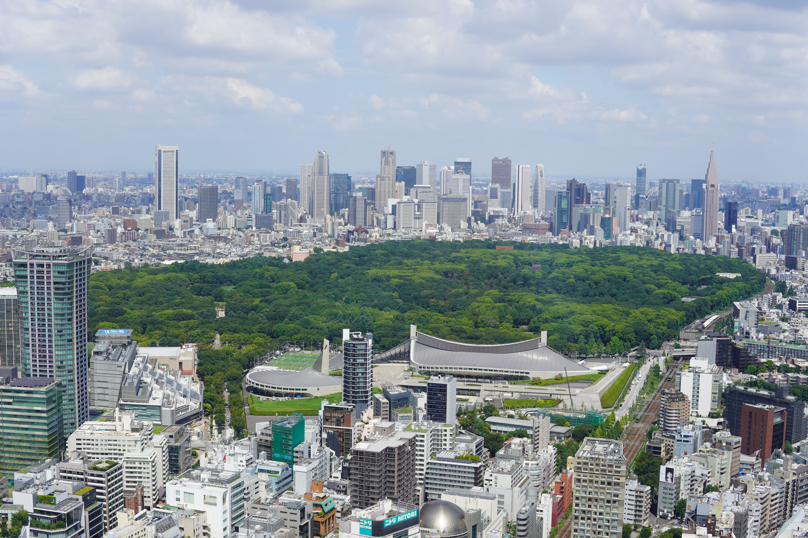

Multimédia
Nesta página encontra conteúdos multimédia.
Fotografias | Vídeo | Poesia
Fotografias








Vídeo
Poesia
Sob o néon que acorda a madrugada,
Tóquio respira em ruas sem descanso,
Em Shibuya a multidão cruzada
Segue o seu passo, apressado e manso.
No Sensō-ji o incenso sobe ao céu,
As sakuras pintam o rio de rosa,
E o Fuji, ao longe, envolto no seu véu,
Guarda a cidade, antiga e luminosa.